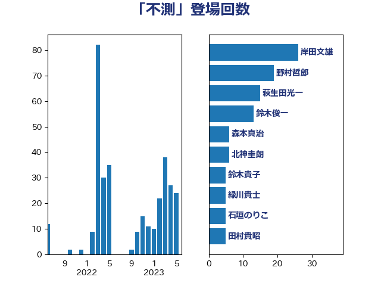

単語「不測」

| 岸田文雄 | 自由民主党 | 22 回 |
| 萩生田光一 | 自由民主党 | 17 回 |
| 野上浩太郎 | 自由民主党 | 13 回 |
| 鈴木俊一 | 自由民主党 | 12 回 |
| 森本真治 | 立憲民主党 | 6 回 |
| 緑川貴士 | 立憲民主党 | 6 回 |
| 柳本顕 | 自由民主党 | 5 回 |
| 國重徹 | 公明党 | 4 回 |
| 岸信夫 | 自由民主党 | 4 回 |
| 枝野幸男 | 立憲民主党 | 4 回 |
| 藤川政人 | 自由民主党 | 4 回 |
| 柳ヶ瀬裕文 | 日本維新の会 | 3 回 |
| 梶山弘志 | 自由民主党 | 3 回 |
| 石井拓 | 自由民主党 | 3 回 |
| 菅義偉 | 自由民主党 | 3 回 |
| 三木圭恵 | 日本維新の会 | 2 回 |
| 中島克仁 | 立憲民主党 | 2 回 |
| 伊波洋一 | 無所属 | 2 回 |
| 吉田とも代 | 日本維新の会 | 2 回 |
| 林芳正 | 自由民主党 | 2 回 |
| 礒崎哲史 | 国民民主党 | 2 回 |
| 秋本真利 | 自由民主党 | 2 回 |
| 細田健一 | 自由民主党 | 2 回 |
| 舟山康江 | 国民民主党 | 2 回 |
| 赤羽一嘉 | 公明党 | 2 回 |
| 金村龍那 | 日本維新の会 | 2 回 |
| 長妻昭 | 立憲民主党 | 2 回 |
| 阿部知子 | 立憲民主党 | 2 回 |
| 三浦信祐 | 公明党 | 1 回 |
| 下村博文 | 自由民主党 | 1 回 |
| 下条みつ | 立憲民主党 | 1 回 |
| 中川貴元 | 自由民主党 | 1 回 |
| 伊東信久 | 日本維新の会 | 1 回 |
| 古賀友一郎 | 自由民主党 | 1 回 |
| 吉川ゆうみ | 自由民主党 | 1 回 |
| 吉川元 | 立憲民主党 | 1 回 |
| 和田有一朗 | 日本維新の会 | 1 回 |
| 國場幸之助 | 自由民主党 | 1 回 |
| 大塚耕平 | 国民民主党 | 1 回 |
| 宗清皇一 | 自由民主党 | 1 回 |
| 小宮山泰子 | 立憲民主党 | 1 回 |
| 小林鷹之 | 自由民主党 | 1 回 |
| 山田勝彦 | 立憲民主党 | 1 回 |
| 岩田和親 | 自由民主党 | 1 回 |
| 岩谷良平 | 日本維新の会 | 1 回 |
| 平将明 | 自由民主党 | 1 回 |
| 庄子賢一 | 公明党 | 1 回 |
| 斎藤嘉隆 | 立憲民主党 | 1 回 |
| 末松信介 | 自由民主党 | 1 回 |
| 本庄知史 | 立憲民主党 | 1 回 |
| 杉久武 | 公明党 | 1 回 |
| 杉本和巳 | 日本維新の会 | 1 回 |
| 杉田水脈 | 自由民主党 | 1 回 |
| 東徹 | 日本維新の会 | 1 回 |
| 梅村聡 | 日本維新の会 | 1 回 |
| 梅谷守 | 立憲民主党 | 1 回 |
| 榛葉賀津也 | 国民民主党 | 1 回 |
| 牧山ひろえ | 立憲民主党 | 1 回 |
| 田名部匡代 | 立憲民主党 | 1 回 |
| 田村まみ | 国民民主党 | 1 回 |
| 田畑裕明 | 自由民主党 | 1 回 |
| 石井啓一 | 公明党 | 1 回 |
| 石井正弘 | 自由民主党 | 1 回 |
| 秋野公造 | 公明党 | 1 回 |
| 稲富修二 | 立憲民主党 | 1 回 |
| 竹内譲 | 公明党 | 1 回 |
| 笠井亮 | 日本共産党 | 1 回 |
| 笹川博義 | 自由民主党 | 1 回 |
| 篠原豪 | 立憲民主党 | 1 回 |
| 藤巻健太 | 日本維新の会 | 1 回 |
| 藤木眞也 | 自由民主党 | 1 回 |
| 足立敏之 | 自由民主党 | 1 回 |
| 金城泰邦 | 公明党 | 1 回 |
| 階猛 | 立憲民主党 | 1 回 |
| 青山大人 | 立憲民主党 | 1 回 |
| 高木かおり | 日本維新の会 | 1 回 |
| 高橋光男 | 公明党 | 1 回 |
| 高橋克法 | 自由民主党 | 1 回 |
| 高橋千鶴子 | 日本共産党 | 1 回 |
| 高野光二郎 | 自由民主党 | 1 回 |
| 鬼木誠 | 立憲民主党 | 1 回 |